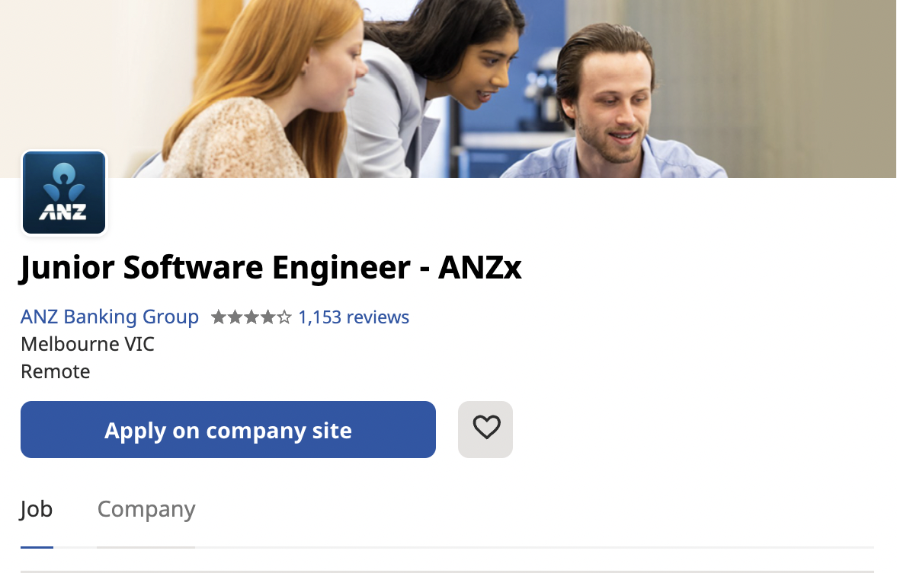

<!DOCTYPE html>
<html>
    <head>
        <title>Harshnoor | Dream Job</title>
        <link rel="stylesheet" type="text/css" href="style.css">
        <link rel="preconnect" href="https://fonts.googleapis.com">
        <link rel="preconnect" href="https://fonts.gstatic.com" crossorigin>
        <link href="https://fonts.googleapis.com/css2?family=Roboto:wght@100;300;400;700&display=swap" rel="stylesheet">
    </head>
</html>
<body>
    <nav id="navbar">
        <div class="container">
            <ul>
                <li><a href="index.html">Home</a></li>
                <li><a href="about.html">About Me</a></li>
                <li><a href="interest.html">Interest in IT</a></li>
                <li id="current"><a href="job.html">Dream Job</a></li>
                <li><a href="profile.html">Profile</a></li>
                <li><a href="idea.html">Project Idea</a></li>
            </ul>
        </div>
    </nav>

    <div class="main-content">
        <div class="container">
            <h1><emphasize>&gt;</emphasize> Ideal Job</h1>

            <h3>Dream Job: Junior Software Engineer at ANZ Banking Group</h3>
            <a href="https://au.indeed.com/jobs?q=software%20engineer&l=Melbourne%20VIC&vjk=b73cef193086fbbf&advn=2022777910456048">Find the link to the Job Listing here &rsaquo;</a>

            <h2>Position</h2>

            <table>
                <tr class="job">
                    <th></th>
                    <th><p>The position of Junior Software Engineer requires you to utilize tools like Golang, React, Swift, Kotlin and Google Cloud Platform. You are required to take advantage of these tools to build flexible, innovate and simple software solutions that cater to the needs of ANZ Banking group’s clientele. Alongside creating new software solutions, employees in this role also have a responsibility to maintain and improve existing software solutions to keep them up to date and feeling fresh. However, what makes this job desirable for me is that you get to be a part of a diverse and large development team, which allows me to meet new individuals who just as enthusiastic to be in the software field as I am. Being part of a team environment also allows me to learn new skills, as it enables you to work closely with others who are already experts in the software field.</p></th>
                </tr>
            </table>

            <h2>Skills and qualifications Required</h2>
            <p>As mentioned above the position of Junior Software Engineer at ANZ Banking Group requires you to have programming experience in the following Languages: Golang, React, Swift and Kotlin. You are also expected to have experience with Google Cloud Platform which is a service used to deploy applications and host databases etc. Although, a developer isn’t anticipated to have experience in all those hard skills, however it is expected of a developer to pick up these tools in a timely manner. More importantly, an individual looking to fill this job, is also contemplated to have soft skills that include the ability to solve problems in a creative manner, as you will be counted upon to develop a software solution for very distinctive problems.</p>

            <h2>Skills and qualifications I currently have</h2>
            <p>Currently, I have limited knowledge and qualifications, and still have a few steps to take before I acquire the necessary skills for this job. While, I have experience programming in Python, I have very limited experience utilizing the programming languages required for the position. As I love to follow the software developing and programming scene, I have been exposed somewhat to these Programming Languages through videos from “Fireship” from YouTube in his “in 100 Seconds Series”. I have also already gained some experience in frontend and backend coding using Flask a Python web-framework and utilizing HTML/CSS to build a UI that somewhat takes User experience into consideration.</p>

            <h2>Action plan to obtain skills and qualifications</h2>
            <p>To be job-ready for the position of Junior Software Engineer I need to familiarise myself with the processes and tools that required to build software. Therefore, I am looking forward to Software Engineering, an Advanced IT option elective. This elective will give me the skills required to work on real-world projects, in a quality manner and manage financial constraints using processes and tools. Furthermore, I also need to expand my knowledge into more languages other than Python, as most Software Engineer jobs require knowledge of multiple programming languages. However, just expanding my knowledge into other languages isn’t enough, as I also need to apply these skills in an actual workplace. This will not only help me demonstrate that I have real-world experience in the software development world, but also help me demonstrate that I have the necessary skillset to work in a team-centred environment.</p>
            </div>
        </div>
    </div>

    <footer>
        <div class="container">
            <ul>
                <li id="current"><a href="index.html">Home</a></li>
                <li><a href="about.html">About Me</a></li>
                <li><a href="interest.html">Interest in IT</a></li>
                <li><a href="job.html">Dream Job</a></li>
                <li><a href="profile.html">Profile</a></li>
                <li><a href="idea.html">Project Idea</a></li>
            </ul>
            <h1>Copyright &copy; All Rights Reserved by Harshnoor Singh (harshnoor34@gmail.com)</h1>
        </div>
    </footer>
</body>